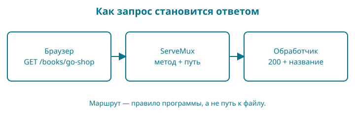

11. Каталог отвечает браузеру
HTTP — протокол обмена запросами и ответами между клиентом и сервером. Клиентом будет браузер, сервером — наша программа Go. Результат главы — локальный HTTP-сервер с каталогом и отдельным адресом книги. Данные пока не меняются. Мы проверяем поведение запросов автоматическими тестами, не требующими занятого порта или браузера.
Нужны пакеты главы 10, структуры, срезы, указатели и функции. Восстановите по памяти: почему catalog не должен импортировать web? Ответ понадобится при отделении правил магазина от способа показа.

Как запустить контрольную точку
Откройте examples/11-http. При ручном переносе скопируйте главу 10, замените путь модуля и его начало во всех внутренних импортах на 11-http. Сохраните пакеты catalog и titlefile вместе с тестами. Добавьте internal/catalog/list.go, папку internal/web, замените cmd/shop/main.go. Никакой установки веб-фреймворка не требуется.
-check — новый флаг нашего магазина: короткая проверка каталога с выходом вместо ожидания браузера. Он передаётся после пути запускаемого пакета ./cmd/shop. Это не стандартная возможность go run: её обрабатывает код cmd/shop/main.go этой главы. Команда без флага запускает сервер.
go run ./cmd/shop -check
go test ./...
go run ./cmd/shop
Первая команда печатает Книг в каталоге: 2 и завершается. Последняя печатает адрес и продолжает работать. Это ожидаемо: сервер ждёт запросов. Откройте в браузере http://127.0.0.1:8080/. Для остановки нажмите Ctrl+C в терминале сервера. Для других команд используйте второй терминал в той же папке либо сначала остановите сервер.
URL — адрес ресурса. В http://127.0.0.1:8080/ часть http задаёт протокол, последний / — путь главной страницы. 127.0.0.1 — адрес этого компьютера, 8080 — порт, то есть номер точки приёма соединений. Адрес не публикует магазин в интернете. Не заменяйте его на 0.0.0.0 только ради избавления от ошибки: это меняет доступность сервиса для других машин.
Запрос и ответ
Браузер отправляет метод и путь. Метод GET просит представление ресурса. Ответ содержит статус, заголовки и тело. Например, 200 означает успешную обработку, 404 — ресурс не найден, 405 — метод не подходит этому адресу.
| Запрос | Результат |
|---|---|
GET / |
Две книги, статус 200 |
GET /books/go-shop |
Название первой книги, статус 200 |
GET /books/missing |
Статус 404 |
GET /unexpected |
Статус 404 |
POST /books/go-shop |
Статус 405 |
Путь /books/go-shop не обязан соответствовать файлу на диске. Это адрес, который программа сопоставляет с обработчиком. Опорный образ — стойка справочной службы: вопрос направляют нужному сотруднику. Граница образа: запросы независимы, и сервер может обслуживать несколько одновременно; нельзя предполагать общий последовательный разговор.
Новые книги создаются в одном месте:
package catalog
// Books creates the ordered initial catalog from the validated file title.
func Books(title string) ([]Book, bool) {
books := []Book{
{ID: "go-shop", Title: title, PriceMinor: 249900, Currency: "KZT"},
{ID: "go-tests", Title: "Тесты на Go", PriceMinor: 150000, Currency: "KZT"},
}
for i := range books {
if !books[i].Publish() {
return nil, false
}
}
return books, true
}
Метод Publish по-прежнему проверяет название, цену и валюту. books[i] позволяет изменить элемент исходного среза; переменная book при переборе значений была бы копией. При невалидной карточке возвращаем false, и сервер не стартует с частично испорченным каталогом.
Один обработчик без запуска сервера
До большого файла маршрутов проследим один вызов. Функция home принимает два аргумента: интерфейс для записи ответа и указатель на структуру запроса. Header().Set задаёт заголовок ответа; fmt.Fprintln пишет в переданный объект вместо терминала. Обработчик не возвращает строку: результат накапливается в объекте ответа.
package main
import (
"fmt"
"net/http"
"net/http/httptest"
)
func home(w http.ResponseWriter, r *http.Request) {
w.Header().Set("Content-Type", "text/plain; charset=utf-8")
fmt.Fprintln(w, "Go shop")
}
func main() {
mux := http.NewServeMux()
mux.HandleFunc("GET /{$}", home)
request := httptest.NewRequest("GET", "/", nil)
response := httptest.NewRecorder()
mux.ServeHTTP(response, request)
fmt.Println(response.Code)
fmt.Print(response.Body.String())
missing := httptest.NewRecorder()
mux.ServeHTTP(missing, httptest.NewRequest("GET", "/missing", nil))
fmt.Println(missing.Code)
}
go run ./labs/01-handler
200
Go shop
404
Команду выполняем из корня главы. Порт не открывается: httptest — часть стандартной библиотеки для запросов и ответов в памяти. NewRequest создаёт запрос, NewRecorder — получателя ответа; его поля Code и Body позволяют увидеть результат. Пустое тело запроса задаётся nil.
В HandleFunc("GET /{$}", home) передаётся функция без вызова, как operation в главе 9. Маршрутизатор запоминает её; позже mux.ServeHTTP(response, request) выбирает маршрут и вызывает home. Первая запись тела выбирает 200, если статус не задан явно. Для /missing подходящего маршрута нет, поэтому код ответа 404.
Трассировка: main → ServeHTTP → home → Fprintln → возврат в main. Напечатайте эту последовательность словами до запуска. Затем замените путь запроса на /missing, не меняя маршрут: home не будет вызван. Не сравнивайте ответ 404 с успешным текстом магазина. Верните путь и добавьте второй маршрут /healthz с отдельной функцией: это подготовка к заданию в конце главы.
ResponseWriter и Handler — интерфейсные договоры стандартной библиотеки. Здесь первый предоставляет запись ответа, второй — метод ServeHTTP. Как и с error, конкретное значение удовлетворяет договору своими методами. Собственный минимальный интерфейс и правила наборов методов разберём в главе 18; для чтения следующего листинга уже нужно отличать функцию от её вызова и интерфейс от указателя на структуру.
Обработчик и маршрутизатор
package web
import (
"fmt"
"net/http"
"github.com/dake-edu/gopher-shop/book/examples/11-http/internal/catalog"
)
// New copies the catalog; handlers only read this snapshot.
func New(books []catalog.Book) http.Handler {
snapshot := make([]catalog.Book, len(books))
copy(snapshot, books)
mux := http.NewServeMux()
mux.HandleFunc("GET /{$}", func(w http.ResponseWriter, r *http.Request) {
w.Header().Set("Content-Type", "text/plain; charset=utf-8")
for _, book := range snapshot {
fmt.Fprintln(w, book.ID, book.Title)
}
})
mux.HandleFunc("GET /books/{id}", func(w http.ResponseWriter, r *http.Request) {
for _, book := range snapshot {
if book.ID == r.PathValue("id") {
w.Header().Set("Content-Type", "text/plain; charset=utf-8")
fmt.Fprintln(w, book.Title)
return
}
}
http.NotFound(w, r)
})
return mux
}
http.NewServeMux() создаёт маршрутизатор. HandleFunc связывает шаблон маршрута с функцией. В записи GET /{$} метод входит в шаблон, а {$} ограничивает совпадение ровно корнем. Просто / совпадало бы и с другими путями. В /books/{id} фигурные скобки обозначают переменный сегмент; r.PathValue("id") возвращает его значение. Это синтаксис маршрута внутри строки, а не блок Go.
У функции обработчика два параметра. Через w http.ResponseWriter пишем ответ. Через r *http.Request читаем запрос. http.ResponseWriter — интерфейс: он описывает доступные методы, а конкретный объект предоставляет сервер. Как с error в главе 9, нам достаточно пользоваться контрактом. Указатель перед http.Request уже знаком по структурам.
Заголовок Content-Type сообщает вид содержимого и кодировку. Его устанавливают до первой записи тела. fmt.Fprintln(w, ...) отправляет текст в ответ вместо терминала. Первая запись тела без явного WriteHeader выбирает статус 200. http.NotFound сам записывает 404 и тело; после его вызова не следует дописывать успешный ответ.
Возвращаемое http.Handler обещает метод ServeHTTP. Наш mux умеет его выполнять. Это позволяет одному обработчику работать и с настоящим сервером, и в тесте.
Функции маршрутов замыкают snapshot: используют значение из внешней функции после её завершения. Мы создаём новый срез и копируем в него карточки. Поэтому последующее изменение среза вызывающего кода не изменяет каталог обработчика. Сейчас Book содержит строки, числа и булево поле: копирования значений достаточно. Если позже появится поле-срез или словарь, копия структуры не станет глубокой автоматически.
Обработчики только читают снимок. Это существенное условие: библиотека может вызывать их одновременно. Добавлять общий изменяемый словарь без синхронизации нельзя. Механизм конкурентного исполнения разберём отдельно; сейчас исключаем общую запись из модели.
Жизненный цикл процесса
package main
import (
"errors"
"flag"
"fmt"
"net/http"
"os"
"time"
"github.com/dake-edu/gopher-shop/book/examples/11-http/internal/catalog"
"github.com/dake-edu/gopher-shop/book/examples/11-http/internal/titlefile"
"github.com/dake-edu/gopher-shop/book/examples/11-http/internal/web"
)
func main() {
if err := run(); err != nil {
fmt.Fprintln(os.Stderr, err)
os.Exit(1)
}
}
func run() error {
check := flag.Bool("check", false, "проверить каталог без запуска сервера")
flag.Parse()
title, err := titlefile.Load("title.txt")
if err != nil {
return err
}
books, ok := catalog.Books(title)
if !ok {
return errors.New("каталог не прошёл проверку")
}
if *check {
fmt.Println("Книг в каталоге:", len(books))
return nil
}
server := &http.Server{
Addr: "127.0.0.1:8080", Handler: web.New(books),
ReadHeaderTimeout: 5 * time.Second, ReadTimeout: 10 * time.Second,
WriteTimeout: 15 * time.Second, IdleTimeout: time.Minute,
}
fmt.Println("Откройте http://127.0.0.1:8080; остановка: Ctrl+C")
return server.ListenAndServe()
}
flag.Bool объявляет логический флаг и возвращает указатель на его значение. Три аргумента — имя, значение по умолчанию и текст справки. flag.Parse() читает аргументы командной строки; после него *check получает выбранное значение. В go run ./cmd/shop -check путь пакета равен ./cmd/shop, а всё после него передаётся магазину. go run ./cmd/shop -h показывает справку о флагах этой программы. Она может меняться между главами.
time.Second и time.Minute — длительности. Поля таймаутов ограничивают чтение заголовков, запроса, запись ответа и ожидание следующего запроса в соединении. Эти значения подходят маленьким учебным ответам; они ещё не являются настройкой для многогигабайтных скачиваний.
ListenAndServe занимает текущий вызов до ошибки или остановки. В этой главе Ctrl+C прерывает процесс. Завершение активных запросов без обрыва появится в главе о контексте и остановке. Не называем нынешнюю остановку плавной.
Тестируем HTTP без сети
package web
import (
"net/http/httptest"
"strings"
"testing"
"github.com/dake-edu/gopher-shop/book/examples/11-http/internal/catalog"
)
func TestRoutes(t *testing.T) {
books, ok := catalog.Books("Go")
if !ok {
t.Fatal("invalid fixture")
}
handler := New(books)
books[0].Title = "Changed outside"
for _, tc := range []struct {
method, path string
code int
}{
{"GET", "/", 200}, {"GET", "/books/go-shop", 200},
{"GET", "/books/missing", 404}, {"GET", "/missing", 404},
{"POST", "/books/go-shop", 405},
} {
w := httptest.NewRecorder()
handler.ServeHTTP(w, httptest.NewRequest(tc.method, tc.path, nil))
if w.Code != tc.code {
t.Fatalf("%s %s: %d", tc.method, tc.path, w.Code)
}
if strings.Contains(w.Body.String(), "Changed outside") {
t.Fatal("catalog aliases caller")
}
}
}
httptest.NewRequest создаёт запрос в памяти. httptest.NewRecorder записывает ответ. handler.ServeHTTP вызывает тот же код, который обслужит браузер. Вложенный литерал []struct{...} описывает таблицу случаев без отдельного имени типа: поля method, path, code объясняют каждую строку.
Этот тест проверяет маршрутизацию, но не доказывает работоспособность порта, TLS или сетевых таймаутов. Поэтому один раз отдельно открываем страницу браузером. После изменений повторяем go test ./....
Задание и восстановление
Добавьте адрес GET /healthz, возвращающий ok и перевод строки со статусом 200. Сначала добавьте случай в таблицу и убедитесь, что тест падает с 404. Подсказка: используйте mux.HandleFunc до return mux.
Решение — обработчик с fmt.Fprintln(w, "ok"). После этого тест должен пройти. Это только проверка доступности процесса, а не готовности будущей базы данных. Проверьте отдельно, что POST /healthz получает 405.
Ошибка address already in use означает, что порт занят, часто вашим предыдущим запуском. Остановите его Ctrl+C. Если изменяете порт в Addr, измените и адрес в браузере. Если браузер показывает старый текст, убедитесь, что перезапустили сервер после редактирования Go: go run не следит за файлами автоматически.
Готовность: вы различаете маршрут и путь файла, объясняете статус 404 и 405, запускаете и останавливаете сервер, пишете тест запроса без открытия сетевого порта.